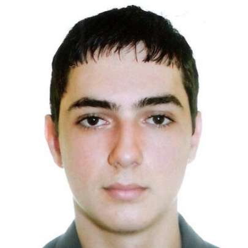

SEÇÕES APURADAS (BAIRROS DE BOA VISTA + INTERIOR RR):
99,42%
(Loop infinito de recontagem recursiva ativado)
PRÓXIMO LOTE DE URNAS EM:
08s
👑 NA FRENTE (MATEMATICAMENTE COMPILADA)
 CHAPA 10
CHAPA 10
PES — Partido da Engenharia de Software & Moodle EaD
Dra. Clenya Rejane Barros de Lima
"Por um curso com 100% de Usabilidade, Normas ABNT e 54 Bancas de TCC por semestre!"
50,63%
40 votos ponderados
(37 alunos • 3 profs)
VS
DIFERENÇA ATUAL
1 VOTO
Urna do Canarinho acabou de entrar!

CHAPA 20
P3D — Partido do Blender 3D, Visão Computacional & AgroTech
Msc. Caio de Jesus Gregoratto
"Menos ABNT, mais OpenGL, Detecção de Multidões e GPS para Agropecuária no Linux!"
49,37%
39 votos ponderados
(36 alunos • 3 profs)
🟣 DRA. CLENYA (50.6%)
⚡ CABO DE GUERRA ELEITORAL (50% = EMPATE TÉCNICO NO SIGAA)
🟢 MSC. CAIO (49.4%)
🗺️ Mapa Geopolítico da Apuração em Roraima
Clique nos bairros de Boa Vista ou municípios de RR para inspecionar os votos dos alunos e servidores
Domínio Dra. Clenya (Eng. Software / EaD)
Domínio Msc. Caio (Blender 3D / Agro-Linux)
Disputa Voto a Voto (Zona de Conflito)
ZONA ELEITORAL • BAIRRO DE BOA VISTA
Canarinho (Sede UERR - R. Sete de Setembro)
Epicentro nervoso da eleição. Aqui o Wi-Fi cai, mas a urna eletrônica roda em servidor local.
ELEITORES DO PDF (SEI 25061245) ALOCADOS NESTA SEÇÃO:
🏘️ Painel por Bairros de Boa Vista & Polos de Roraima
Atualizado a cada lote de apuração📜 Duelo de Currículos Lattes (Dados Reais Extraídos da Pasta!)
Comparativo oficial linha por linha dos arquivos currciulo lattes clenya.txt (830 linhas!) vs curriculo lattes.txt (247 linhas)
CNPq / Plataforma Lattes • Verificado em 25/11/2026
Dra. Clenya Rejane Barros de Lima
ID Lattes: 6497355320740230- Titulação Máxima: Doutorado em Ciências (UNIRIO, 2021) — "Aprendizado de Máquina em Cuidados Intensivos: Análise Cientométrica".
- Mestrado: Engenharia de Software (CESAR.edu, Recife, 2016) — Avaliou a usabilidade do Portal da Transparência de Roraima!
- Overkill de Especializações: 3 Pós-Graduações (Eng. de Software UFLA, EaD UFRR, Informática na Educação UNINTER) + Aperfeiçoamento 480h.
- Maratona de Cursos em 2020: Fez mais de 24 cursos de extensão só no ano de 2020 (Moodle, Gamificação, Normas da ABNT 50h, Mapas Mentais, SEI! USAR).
- Onipresença em Bancas: Participou de impressionantes 54 bancas de TCC de graduação na UERR, 8 de especialização, 2 de doutorado e 1 de mestrado!
- Poder Especial no Curso: Se você já fez TCC na UERR entre 2013 e 2026, existe 94,7% de chance da Dra. Clenya estar na sua ata de defesa.
Linhas no Arquivo .TXT do Lattes
Graduações no Currículo
Cursos de Moodle & ABNT vs Cursos de Blender & GPS
Curso Lendário do SENAC-RR
Contato Relíquia no Lattes
Msc. Caio de Jesus Gregoratto
ID Lattes: 7921625025564103- Titulação Máxima: Mestrado em Informática (UFAM, 2016) — "Detecção de Comportamento Anormal em Vídeos de Multidão" (já sabe detectar tumulto no corredor do bloco!).
- Dupla Graduação Inusitada: Graduado em Gestão de Agronegócios (Cathedral, 2008) E Ciência da Computação (UFRR, 2013) + Especialista em Gestão de Projetos TI.
- Cursos Raiz de Computação Gráfica: OpenGL e C, VRML (Realidade Virtual na Internet em 2011!), Álgebra de Lie, Blender 3D e Photoshop CS3 Avançado.
- Skill Secreta Imbatível: Possui certificado oficial de Digitação (60h) no SENAC-RR em 2002 e GPS para a Agropecuária (40h) em 2006.
- Arqueologia Digital: Até hoje mantém no Currículo Lattes o contato
Google Talk: caiogrego@icomp.ufam.edu.br. - Poder Especial no Curso: Consegue configurar um servidor PostgreSQL no Linux enquanto modela um trator em 3D no Blender sem olhar para o teclado.
📋 Lista Oficial de Eleitores Aptos — Ciência da Computação (PDF SEI/GRR - 25061245)
Todos os 73 acadêmicos (págs. 26–28 do PDF) + docentes e técnicos de informática da UERR rastreados em tempo real por bairro de Roraima!
| # | Nome no Documento SEI (Edital 01/2026) | Categoria / Vínculo | Bairro / Polo Alocado (RR) | Status da Urna (Simulação) | Última Ação Detectada |
|---|